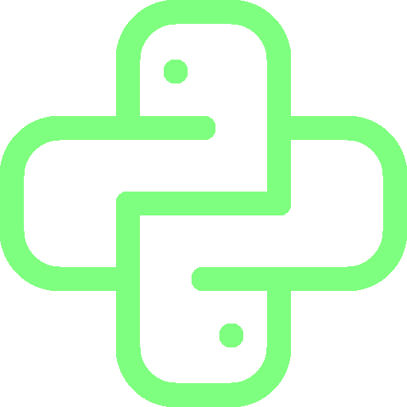
python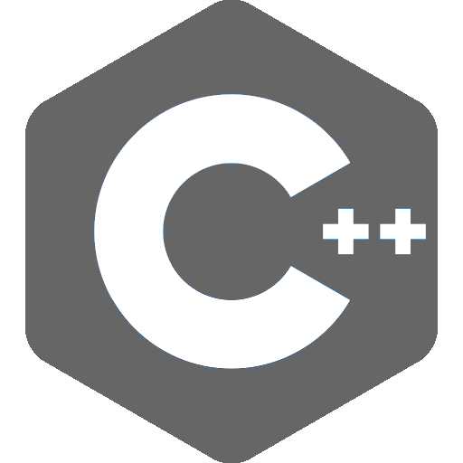
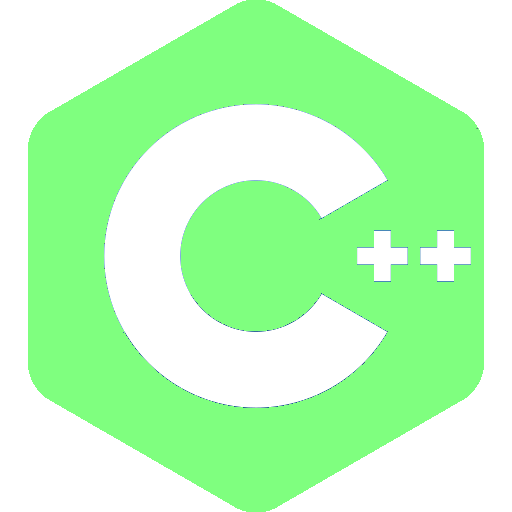
c++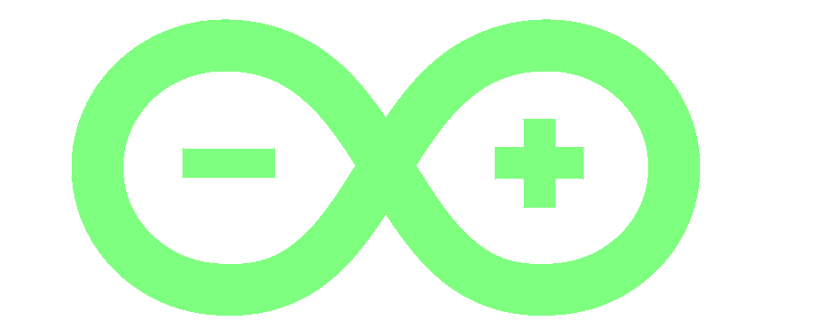
arduino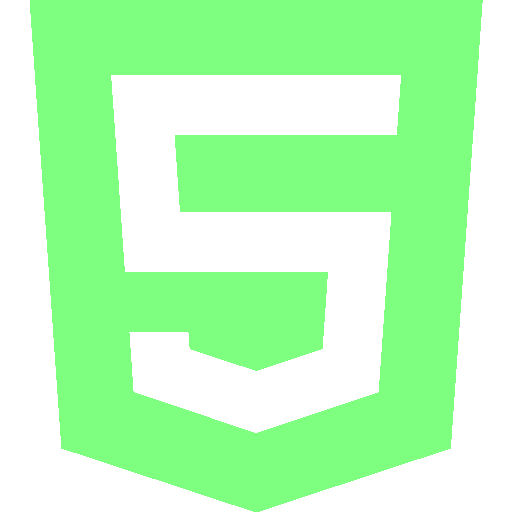
html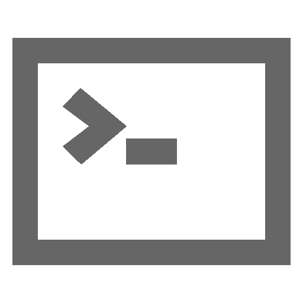
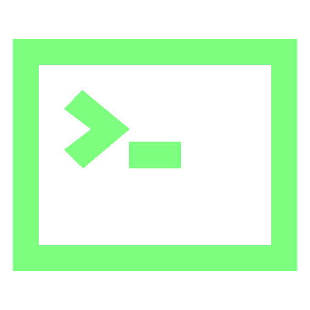
bash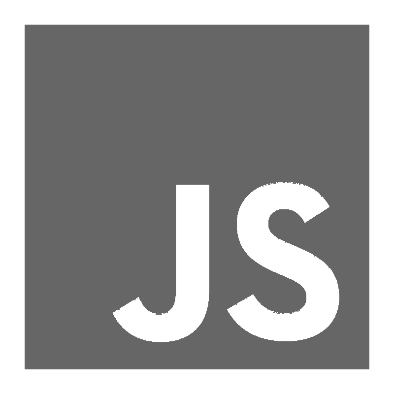
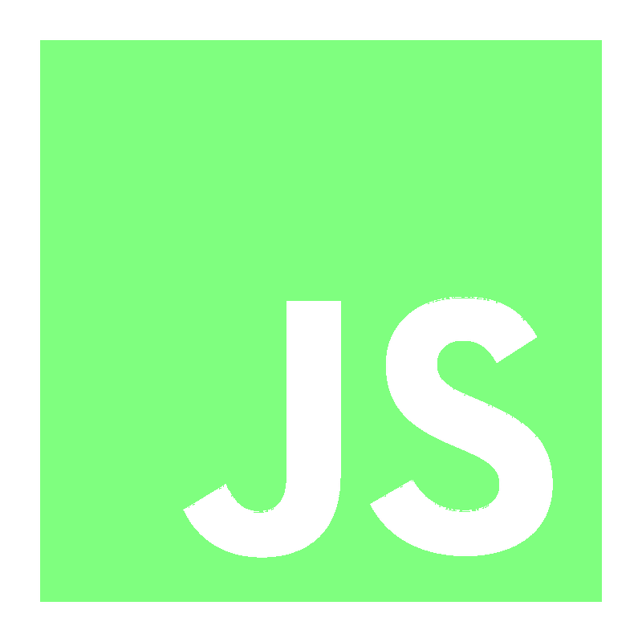
javascript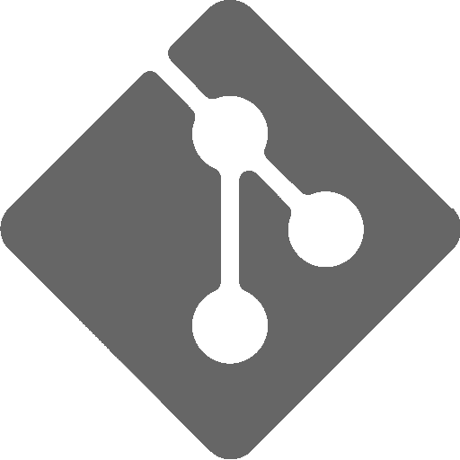
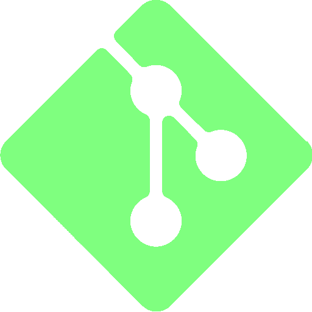
git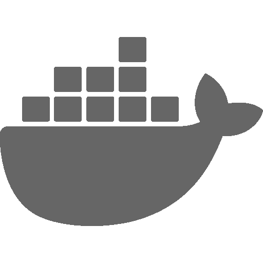
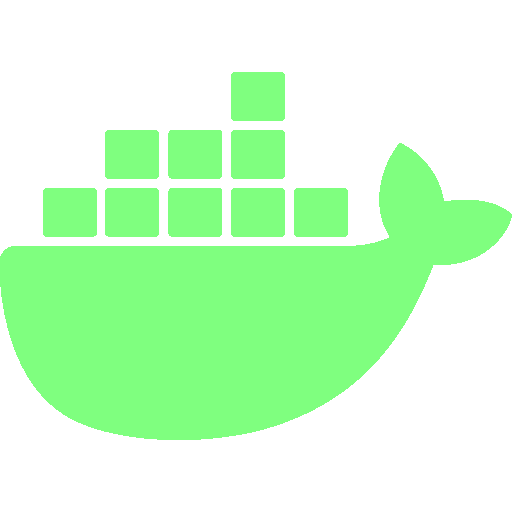
docker// about
i build things for the web. i enjoy writing clean, minimal code and designing interfaces that get out of the way. when i'm not at a keyboard, i'm probably thinking about keyboards.
i also solve ctf challenges — mostly in data forensics.
// projects
a description of what this project does and why it matters.
another thing i built that solves a real problem.
fast, minimal, and open source — the way things should be.
// contact
want to work together or just have a chat? drop me a message and i'll get back to you.